04 · Original-paper reproduction
The historical PB–ROE effect is directionally reproducible

Reproduced PB–ROE Top 50 return, after the original cost assumptions.
Original-paper result for the same core rule.
Holding periods in which the reproduced strategy beat its benchmark.
Not a field-by-field Wind replication. Free data, industry versions and execution details explain part of the gap.
05 · Modern re-evaluation
PB–ROE still predicts returns, but the economic payoff is much weaker

PB–ROE mean Rank IC; ICIR = 0.82 and Newey–West t = 3.73.
Raw PB–ROE annualized long–short return after 30 bp cost.
Five-group monotonicity—below the 0.80 selection gate.
Static industry labels are descriptive only; they are excluded from the formal historical target and constraints.
06 · Eight-factor validation
Standalone test: only reversal passed all five gates
Five rules fixed before testing
Passed in development: IC 4.47% · NW t 2.29 · net return 5.92%
Later IC (2023–2025): −1.89%
Click a factor name for its IC chart, five-group result and failed gates.
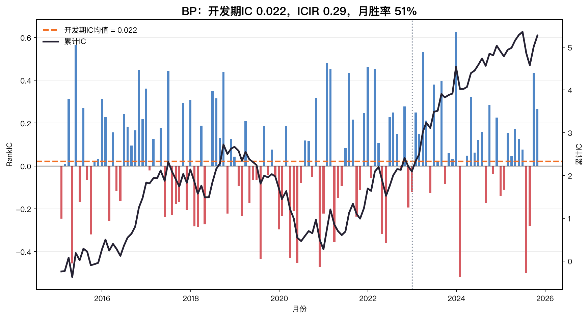
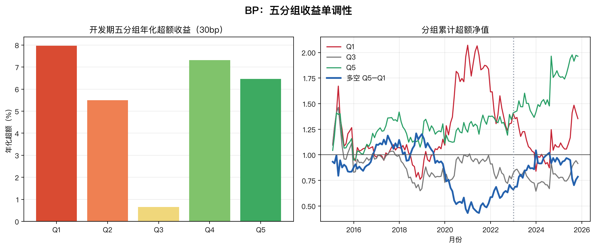
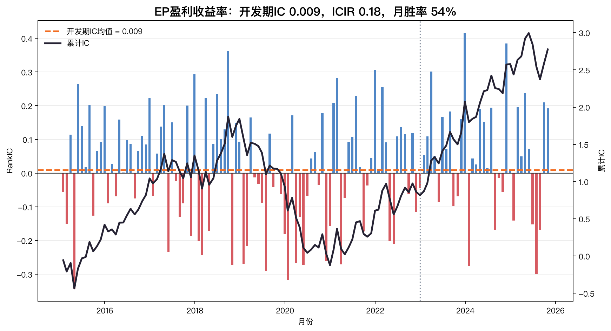
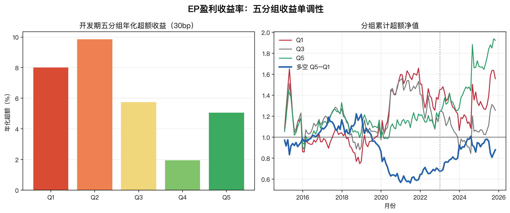
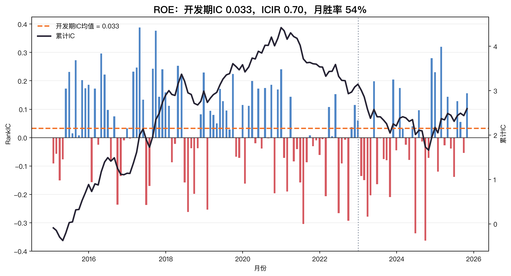
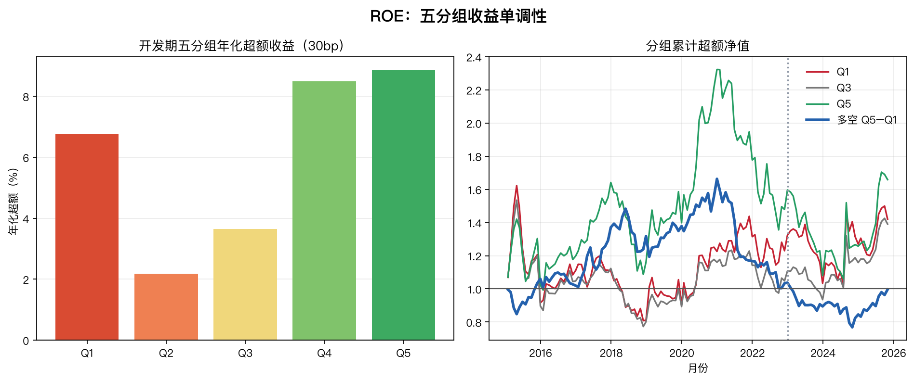
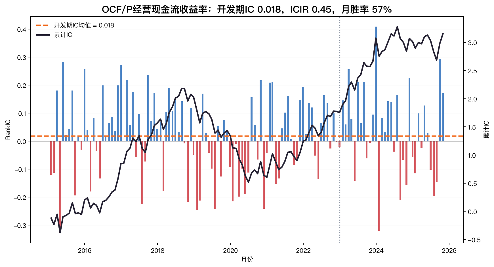
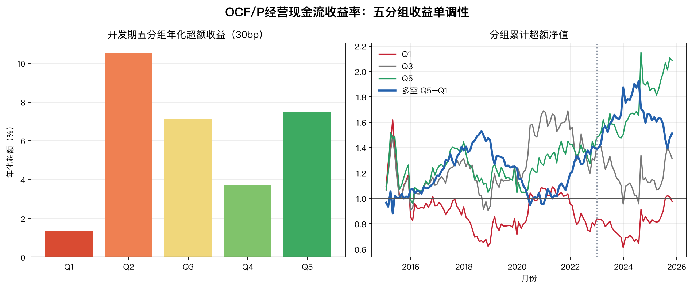
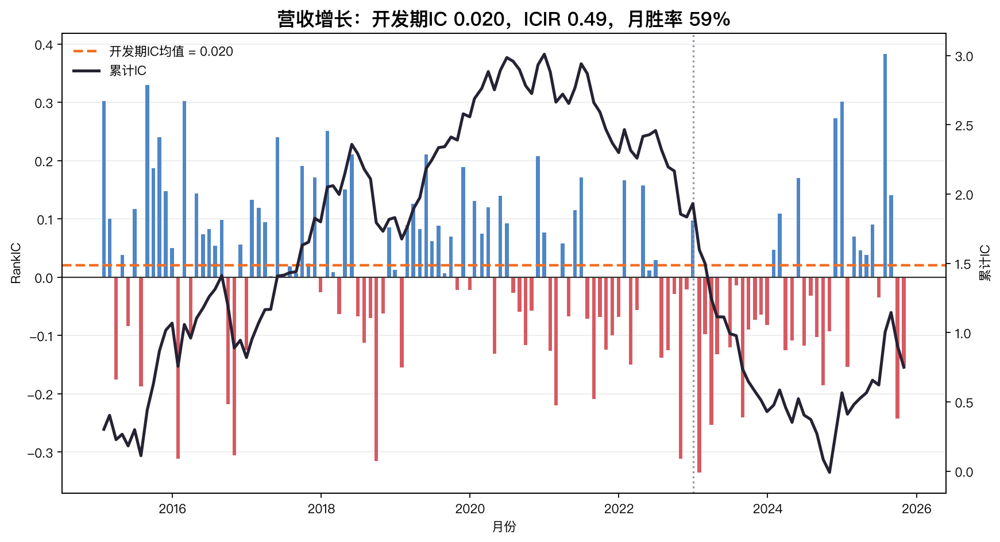
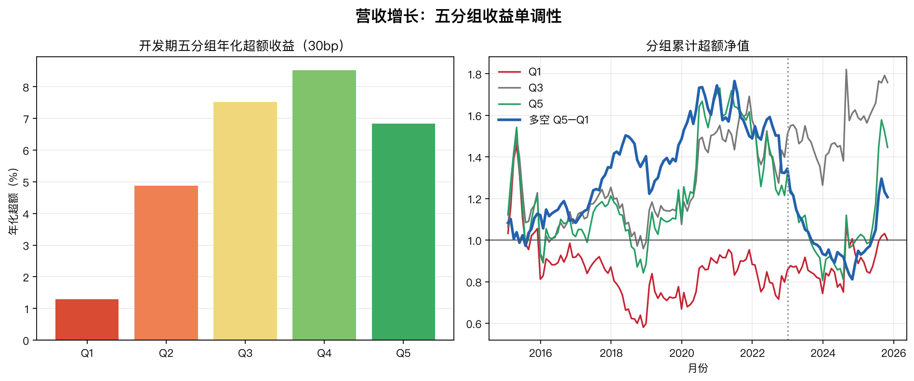

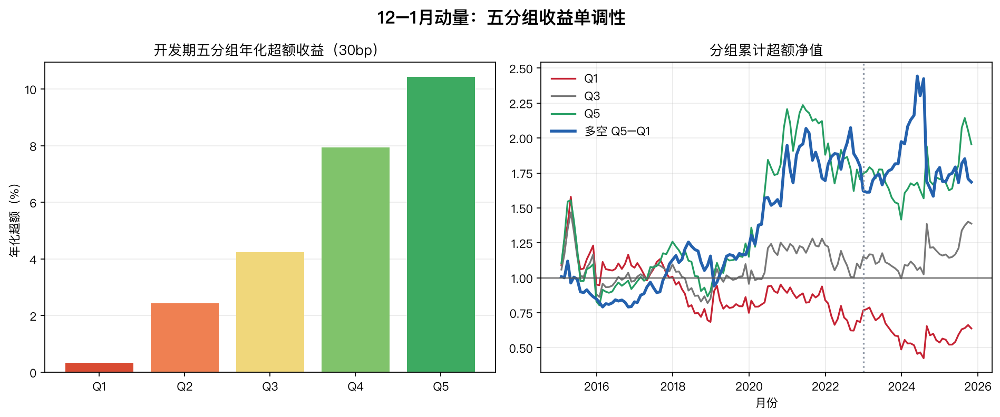
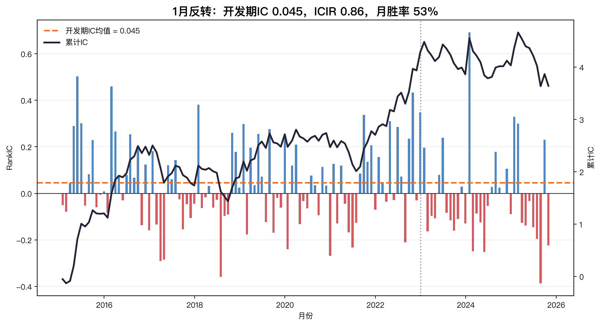
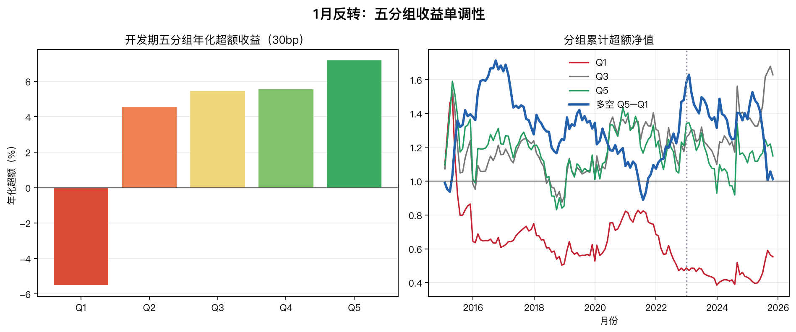

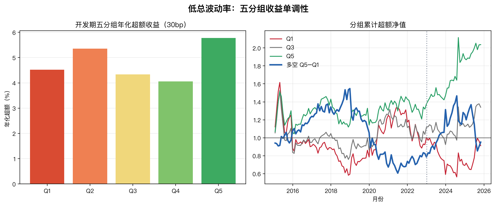
09 · Constrained portfolio
Simple factor diversification delivered the best risk-adjusted result

5-factor equal-weight Sharpe after 30 bp—the highest tested.
5-factor equal-weight annualized return after 30 bp.
PB–ROE baseline annualized return after 30 bp.
Elastic Net; LightGBM earns 6.95% versus a 5.58% proxy benchmark.